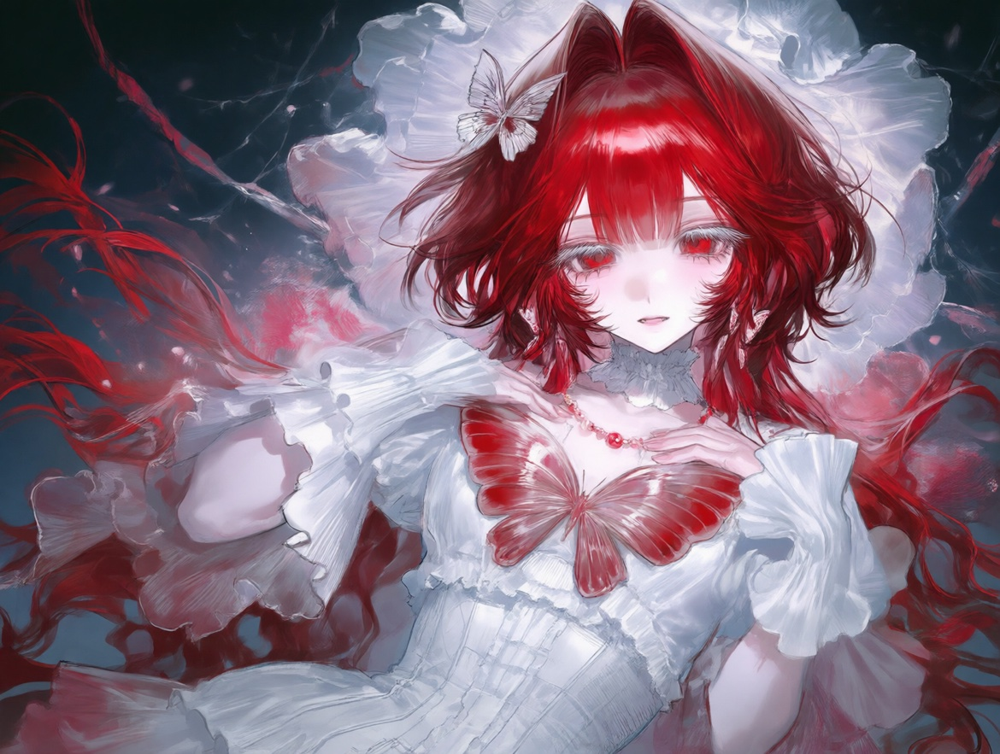

THE VAULT — 記録庫
幼い頃、蝶を生み出す力に優れていたのは妹のノエルだった。彼女の周りにはいつも蝶が舞い、人は彼女を愛した。姉のアルマはいつもその隣にいた。 しかし成長するにつれ、力は釣り合いを失っていった。アルマの鱗粉は鮮やかに色づき、ノエルの蝶は透明になっていった。分け合ったはずの力は、いつしか一人に集まっていった。 誰のせいでもない。でも、確かに何かが壊れ始めた。

A STOPPED CLOCK — 止まった時計
小部屋A SMALL ROOM
入口に戻る